Caso 024 · Frank O. Gehry · 1997 · museo (gran equipamiento)
Cinco torres de piedra, cada una más baja que la anterior hacia el puente, sostienen cinco planos de acero a cinco alturas; cada plano flota sobre una franja de luz y todas nacen de un mismo zócalo de piedra elevado sobre la inundación, hecho de cinco crujías. La idea sintetiza el lugar (inundación supuesta de +2,50 m, puente al este, ría al norte, cielo cubierto), el programa (cada torre es un sector de incendios y un tipo de sala; el zócalo guarda lo pesado y lo oscuro), la composición (retícula de 13 x 13 m con cinco ejes de torre) y la construcción (hormigón chapado en caliza abajo, acero arriba).
Estereotómico: zócalo y torres, de muro de hormigón armado de 0,6 m chapado en caliza, sobre pilotes de 0,9 m y 16 m (de +2,0 a -14,0 m). Tectónico: el plano de acero de cada torre, apoyado en pilares de acero redondos de 0,5 m en la última planta, con protección intumescente R 120. Retícula de 13,0 m en las dos direcciones (ejes x = 8 + 13k, y = 60 + 13j). Cada torre ocupa dos vanos por tres (26 x 39 m) y tiene su núcleo (escalera pública, ascensor y ascensor de carga, escalera de evacuación) en el lado norte. El auditorio (26 x 30 m) no tiene pilares: dos vigas de canto de hormigón postesado, de 26 m de luz, 2,00 m de canto (luz/13) y 0,8 m de ancho, en y = 73 m e y = 86 m, sostienen el forjado de la plaza elevada; la segunda apea además el pilar interior de la torre 2. El forjado de la plaza tiene 0,60 m de canto (luz/25).
Sol al mediodía a 43,27° N: 23,3° en invierno, 46,7° en los equinoccios y 70,2° en verano. La planta alta de cada torre abre una banda de 2,2 m al norte y al sur bajo un plano con vuelo de 3,0 m: en verano el vuelo la cierra (3,0 x tg 70,2° = 8,3 m) y en invierno deja pasar un haz sólido de 0,7 m que cae a 10-12 m del muro sur, sobre el umbral entre la sala y el pasillo. Las plantas bajas de torre reciben luz horizontal difusa por tres rendijas de 1,2 m al norte; la sala en profundidad recibe haces de 0,5 m por tres rendijas al sur; el resto del zócalo es oscuro a propósito. En S01 la sombra del sol de 23,3° se dibuja en gris claro.
Sistema proporcional: módulo de 13,0 m en planta; 5,0 m en altura de torre (3,6 + 6,0 + 5,0 k); torre de 2 x 3 módulos.
Caliza y arenisca de la tradición del lugar para la masa; hierro (acero) de la tradición industrial de la ría para los planos.
La entrada principal es un umbral de 9,6 x 5,4 m en el eje del paseo arbolado de 24 m de ancho, bajo una marquesina de acero de 26 x 6,4 m. La explanada sube del 0,00 al +3,60 m con una pendiente del 6 % en 60 m; el acceso de coches y camiones es por la calle oeste, que lleva al aparcamiento (anillo de un sentido, calles de 6,0 m, 36 plazas de las que 2 son accesibles, entrada y salida por el oeste) y por el este al muelle. El vestíbulo principal (949 m²) da a las taquillas, la tienda, el foyer (507 m²) y el núcleo central; el auditorio (780 m², 336 butacas) se alcanza desde el foyer y recibe la escenografía desde el almacén por una puerta de 3,0 m. Las cinco crujías del zócalo tienen cada una su calle de obras de 507 m² para camiones y carros, con puertas EI 120 en los muros de crujía.
| Exigido | Propuesto | Cumple |
|---|---|---|
| Situación, plantas, secciones, alzados, espacios exteriores | P01-P07 (P02-P07 a 1:300), S01-S04, U01 (planta de cubiertas con su entorno), V01-V02 | Sí; sin detalles constructivos (decisión del autor) |
| Piezas pedidas: perspectiva a mano, sección fugada, ambientación | croquis_1 (perspectiva a mano del conjunto, hoja de cuaderno con sección, planta y axonometría), V04; ambientación (visitantes, árboles) en V01, V02 y V04 | Desviación por decisión del autor: V03 se funde con croquis_1 («elegir solo 1») y V05 se elimina («no se entiende lo que se quiere transmitir») |
| Superficie 26.000-44.000 m² | 27.900 m² | Sí |
| Salas de la colección (un tercio) | torre 1 (5 plantas) y planta 1 de la torre 2 | Sí |
| Temporales, instalaciones en profundidad | torres 2-4; sala en profundidad 1, larga y 2 (1.014 + 507 + 308 m²) | Sí |
| Acceso, tienda, restauración, aseos, guardarropa | vestíbulo 949 m², tienda 338 m², restaurante en torre 3, aseos en cada planta | Sí |
| Auditorio, educación, administración | 780 m², dos aulas (Aula 1 de 139 m² y Aula 2 de 169 m²), oficinas en torre 5 | Sí |
| Almacén, taller, muelle | 1.014, 338 y 130 m² | Sí |
| Sector ≤ 2.500 m² | crujías de unos 2.470 m²; torre de 1.014 m² por planta; calle de obras partida en 5 sectores | Sí |
| Evacuación ≤ 50 m | dos escaleras por torre (38 m) | Sí |
| R 120 hasta 28 m, R 180 por encima | acero protegido R 120; las plantas sobre 28 m llevan protección R 180 | Sí |
| Itinerario accesible total, puertas ≥ 0,80 m, paso 1,20 m, pendiente ≤ 6 % | explanada del 6 %, ascensores en cada torre, puertas de 0,9-1,0 m | Sí |
| Escalera pública huella ≥ 28 cm, contrahuella 13-17,5 cm | huella 30 cm, contrahuella 16,7 cm | Sí |
| Barandilla 1,10 m si cae más de 6 m | 1,10 m en la plaza elevada | Sí |
Retícula de 13,0 m; forjado postesado de 0,50 m (luz/26), 0,60 m en la plaza elevada. Área tributaria 169 m². Pilar interior de la torre 1 (5 plantas): unos 12.000 kN, hormigón de 0,9 x 0,9 m, esbeltez 6,7. En la plaza elevada, luces de hasta 14,8 m en diagonal (canto 0,60 m); sobre el auditorio, la herramienta mide una luz de 18,6 m en diagonal, aunque el forjado salva 13,0 m entre el muro y la viga de canto de 2,00 m. Cimentación: encepado de 3,0 x 3,0 x 1,6 m sobre cuatro pilotes de 0,9 m bajo cada pilar; bajo cada muro, viga de 1,6 x 1,2 m sobre una pantalla de pilotes de 0,9 m; la cara superior toca la solera (+3,2 m). Juntas no se modelan.
Muros de zócalo y torres: hormigón con acabado de piedra caliza. Tabiques interiores: yeso enlucido. Planos de las torres: metal. Vigas del auditorio, encepados y pilotes: hormigón. Escenario: madera.
Cada torre dispone de su ascensor y su ascensor de carga hasta la calle de obras. La climatización y el resto de instalaciones se alojan en la sala de instalaciones de la crujía 1 (308 m²).
Clima oceánico (Cfb) con 1.200 mm de lluvia: cubiertas planas del plano de acero, luz difusa del norte, sol bajo de invierno aprovechado en una sola franja, sol de verano cerrado por el vuelo de 3,0 m.
Itinerario accesible desde la calle hasta cada planta por la explanada del 6 % y los ascensores. Cada planta de torre (1.014 m², unas 500 personas a 2 m² por persona) tiene dos escaleras, la pública y la de evacuación, en los extremos del núcleo; las puertas de los aseos accesibles son de 1,0 m y cada aseo accesible mide 22,5 m² en planta baja. El aparcamiento tiene vestíbulo de independencia EI 120 hacia el núcleo 1 y dos salidas peatonales directas a la explanada.
Cada planta de torre abre ventanas en las cuatro fachadas (sur de 3,0 y 4,0 m, norte, este y oeste de 2,4 m, con antepecho de 0,9 m y dintel de 3,6 m); la última planta conserva además las bandas altas de 11,0 m bajo el plano de acero. El zócalo de piedra abre ventanas altas a la calle de obras y al vestíbulo y ventanas bajas de ventilación en el aparcamiento. La tienda tiene un acceso secundario (puerta doble EI 120 de 2,4 m) desde las salas en profundidad. El aula se divide en dos, Aula 1 (con puerta propia al vestíbulo del núcleo 2) y Aula 2. Los ascensores se dibujan en cada planta con su cabina, su aspa y su puerta corredera. Los aseos de los vestíbulos tienen las picas contra el muro y las cabinas llenan el ancho de cada sala (8 de mujeres y 8 de hombres).
Comparte con la obra original lo que impone el encargo: solar a orillas de la ría, puente de La Salve al este, programa de museo con colección, muelle y aparcamiento. No adopta lo que decidió su arquitecto: no hay puente sobre el edificio, ni atrio central, ni titanio, ni formas curvas; la propuesta es ortogonal, de piedra y acero, con cinco torres y cinco planos. No reproduce ninguna obra de Campo Baeza: aplica su teoría (masa abajo, plano arriba, luz medida) con una configuración propia.
El soleamiento calculado y la vista maqueta_1 sustituyen a las maquetas reales al sol. El puente (tablero a +17,0 m) y la cota de inundación (+2,50 m) son hipótesis.
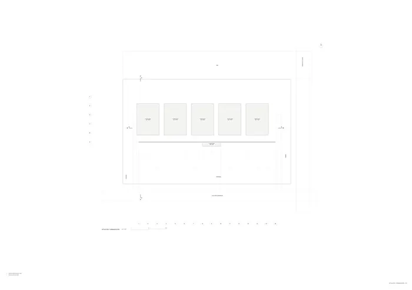
U01 · Situación y urbanización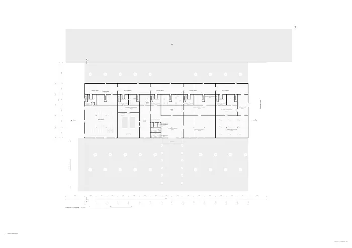
P01 · Planta baja y exterior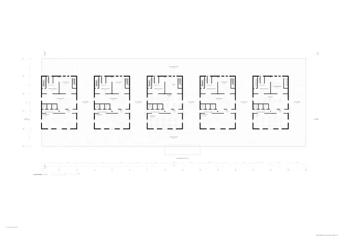
P02 · Planta primera plaza elevada y torres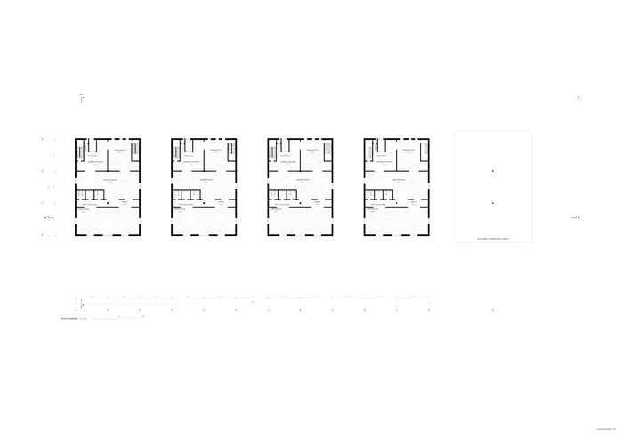
P03 · Planta segunda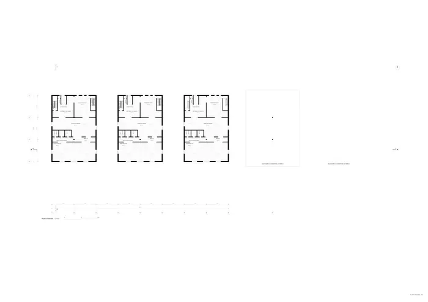
P04 · Planta tercera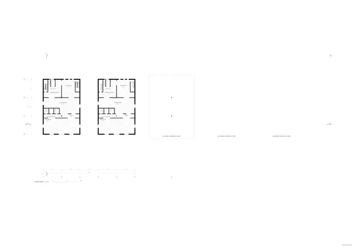
P05 · Planta cuarta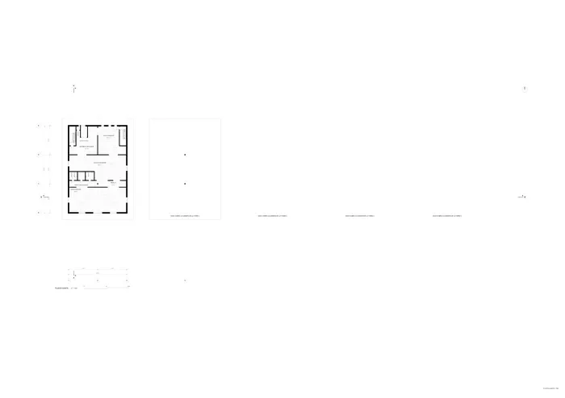
P06 · Planta quinta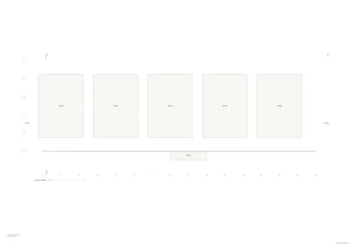
P07 · Planta de cubiertas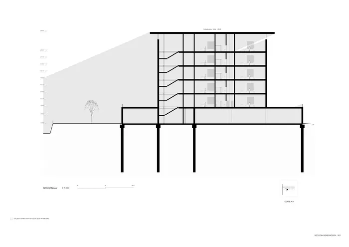
S01 · Sección generadora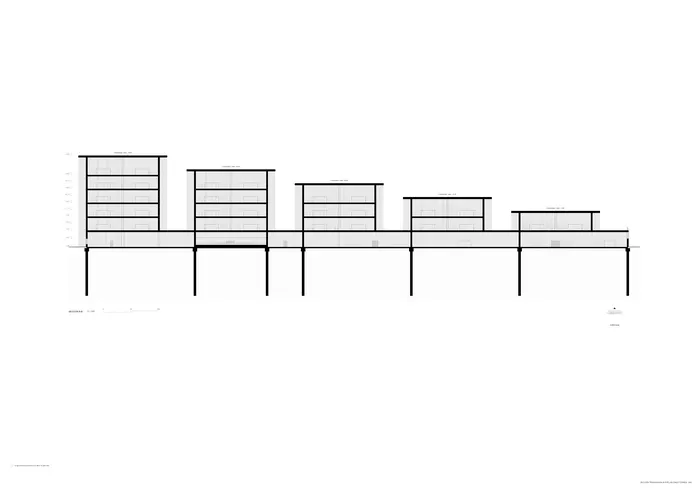
S02 · Sección transversal B por las cinco torr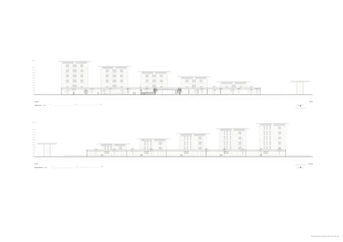
S03 · Alzados sur hacia la ciudad y norte haci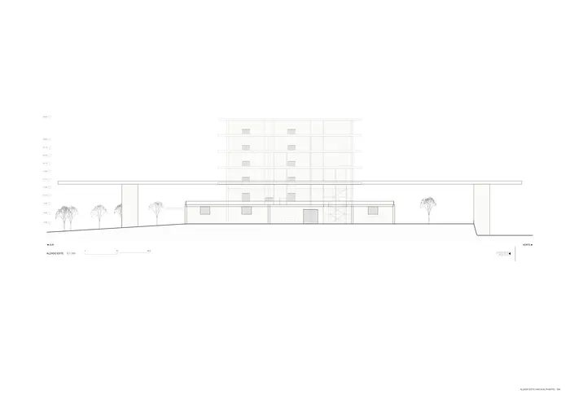
S04 · Alzado este hacia el puente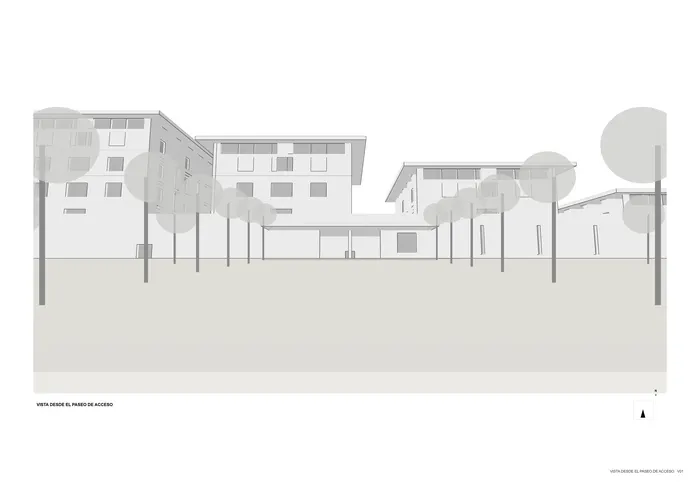
V01 · Vista desde el paseo de acceso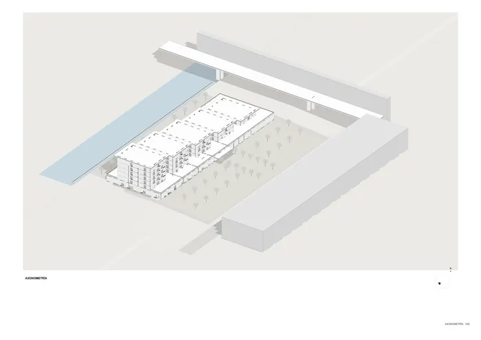
V02 · Axonometría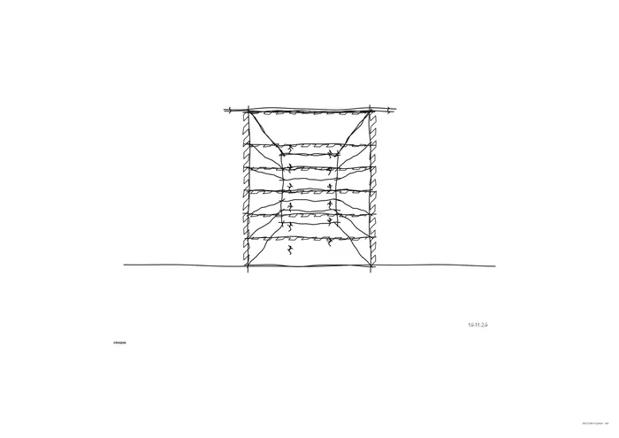
V04 · Sección fugada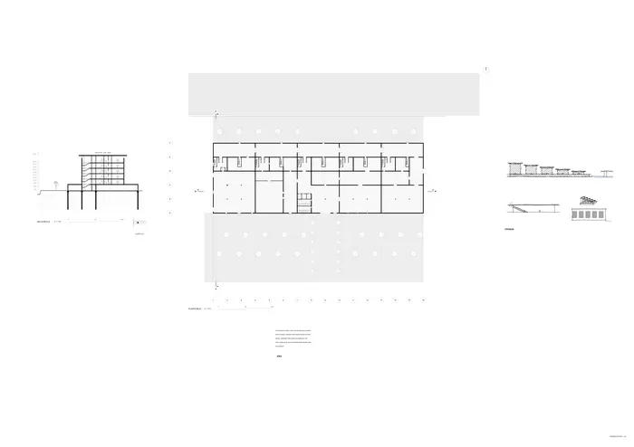
L01 presentaciónMemoria de la propuesta tal como la entregó el sistema. Se han omitido las notas internas del proceso (revisiones, control de reconocimiento y referencias a archivos de trabajo).